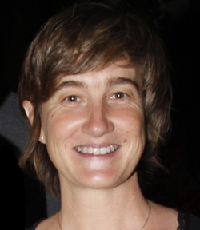

Curriculum Vitae
Ana Teresa Aldasoro, Nace en San Antonio de Areco en 1972.
De niña frecuenta el estudio de arquitectura de su padre y se acerca al dibujo técnico, al estudiar en la Escuela de Bellas Artes de su pueblo natal conoce a su primera profesora de dibujo María Corradeti, quien influyó notablemente en su formación artística.
Durante algunos años estudió y se dedicó al diseño del paisaje, experiencia que la enriqueció en el conocimiento de plantas visible en su obra.
Concurrió al taller de pintura de Marcela salcedo y durante su carrera en la Escuela de Artes Visuales n°1 Gustavo Chertudi, tomó clases de dibujo con Alfredo Napolitano y de grabado con Alberto Arjona, quien le despertó el interés por el color.
Participó del taller de creatividad de Jorge Riccardulli en busqueda de la ruptura de la imagen figurativa como se puede ver en sus últimas obras.
Por muchísimos años ilustró la tapa de la revista Don Segundo difundida en San Antonio de Areco, recreando espacios cotidianos, arquitectura y momentos urbanos.